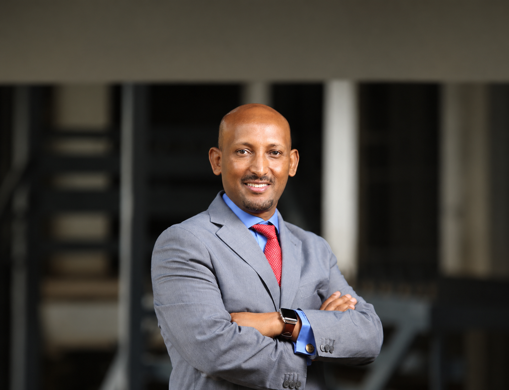

Prof. Dr. Mehari Taddele Maru
More than 23 years of teaching and research experience in geopolitics, peace and security, law and governance, migration and humanitarian affairs.
Spanning over 25 years, Prof. Dr. Mehari Taddele Maru’s career reflects a unique blend of academic excellence in teaching and research, professional policy experience, and leadership in intergovernmental negotiations, as well as the management of multilateral governance bodies, think tanks, and universities based in Africa, Europe, and the United States of America. Having been stationed in Addis Ababa, Ethiopia; Nairobi, Kenya; Florence; and Rome, Italy, he has extensive experience working with major international organizations, including the African Union, the United Nations, Regional Economic Communities, and the European Union.
Currently, Professor Maru serves as the Academic Coordinator of the Young African Leadership Programme at the European University Institute, a Part-time Professor at the Florence School of Transnational Governance, a Part-time Professor at the Migration Policy Centre, an Adjunct Professor at Johns Hopkins University SAIS-Europe, and at LUISS Guido Carli University.
Prof. Maru has also contributed to globally reputable journals and made media appearances, focusing on the new frontiers of transitional law and governance, human development, peace, geopolitics, and migration and mobility.
His recent examples of research work and publications include his contribution to the UNDP Regional Human Development Report, which focused on fostering effective transnational governance and peace as one of three key pillars for enhanced intra-regional trade and increasing sustainability and continental resilience in the water-energy-food nexus. He has contributed to the 2022 World Migration Report, which examines peace and security as drivers of stability, development, and safe migration. He also regularly contributes to the Henley Global Mobility Report.
Another recent work published as a Fellow at the United Nations University Institute on Comparative Regional Integration Studies (UNU-CRIS) in Bruges, Belgium, focused on Africa’s geopolitical agency in the world and recent wars in Africa, examining their implications for the African Union’s Pan-African integrative and interventionist mandate and Regional Economic Communities. His studies explain how global great powers and Middle Eastern powers are increasingly engaging in a ‘race to the bottom,’ pursuing influence without regard for long-term consequences, which could present both challenges and opportunities for Africa. With his colleagues at the Migration Policy Centre of EUI, he worked on research projects such as MEDAM and published some works. Many of his articles, published in international and African journals, are available at https://orcid.org/0000-0001-7137-9140. Furthermore, his articles and interviews have been featured in international media outlets, including Foreign Policy, Project Syndicate, Just Security, CNN, The New York Times, Washington Post, Time, Forbes, ABC, AFP, Al Jazeera Net, Al Jazeera Studies Centre, BBC, Bloomberg TV, Voice of America, Deutsche Welle, ABC News Radio, Financial Times, Reuters, Open Democracy, Radio France International, SABC, and TRT.